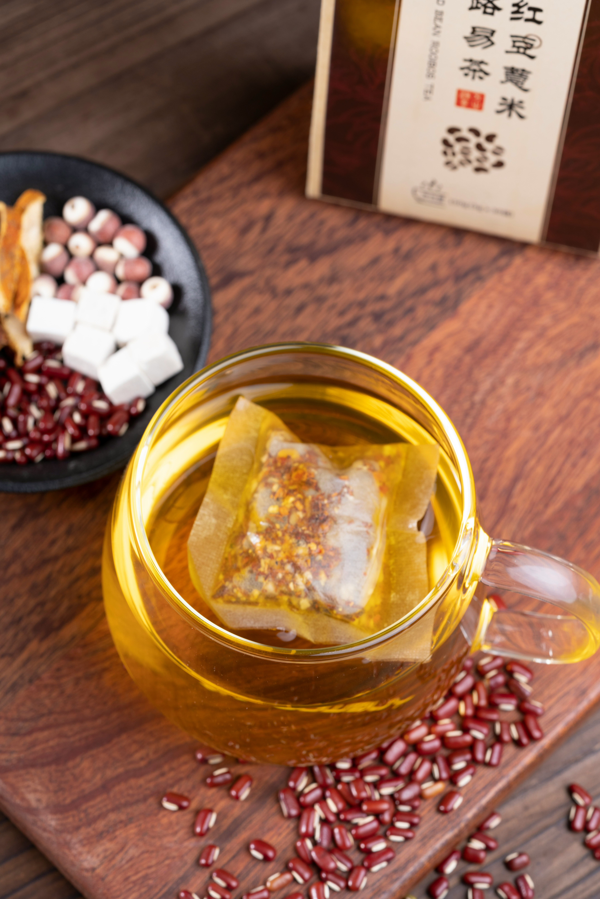
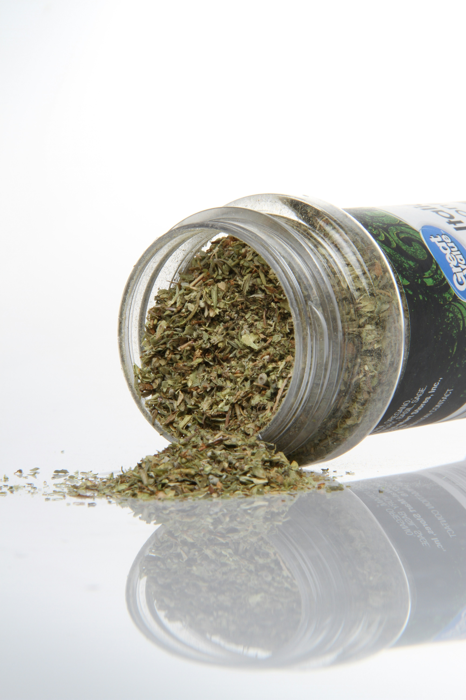
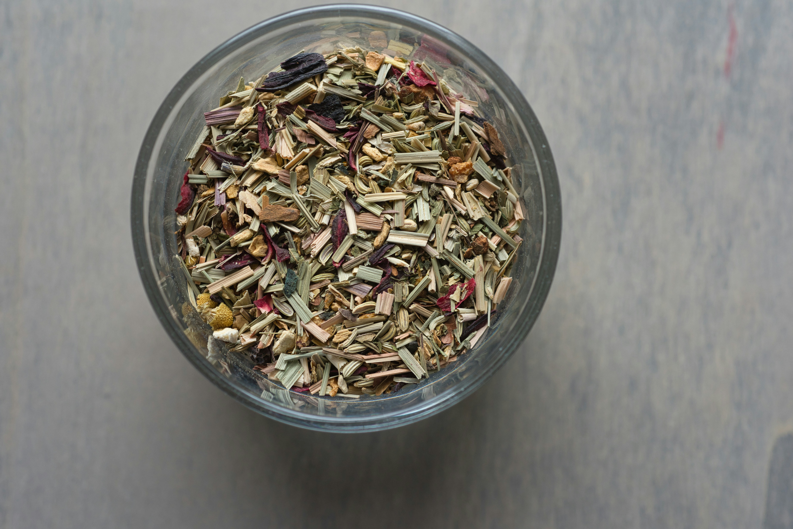

Ginger and Lemon Tea
A simple herbal tea blend combining ginger and lemon flavours. It is suitable for customers who enjoy warm, naturally flavoured herbal drinks.
Format: Dried tea blend
Enquire About This ProductExplore the range of herbal wellness products available from Herbs Connect. Our products are inspired by traditional herbal practices and are presented for customers interested in natural wellness.
Product availability may vary. Customers can contact Herbs Connect or submit an enquiry for more information.

A simple herbal tea blend combining ginger and lemon flavours. It is suitable for customers who enjoy warm, naturally flavoured herbal drinks.
Format: Dried tea blend
Enquire About This ProductA traditional South African-inspired herbal tea blend based around rooibos and selected natural ingredients.
Format: Loose tea blend
Enquire About This Product
Dried moringa leaves prepared for customers interested in traditional herbal practices and natural ingredients.
Format: Dried leaves
Enquire About This Product
Dried mint leaves that can be used as part of traditional herbal preparations or enjoyed as an aromatic herbal ingredient.
Format: Dried leaves
Enquire About This ProductA topical herbal balm inspired by traditional wellness practices. Customers should follow the product instructions and enquire about ingredients before use.
Format: Balm
Enquire About This ProductA dried herbal mixture intended for customers interested in traditional bathing and relaxation practices.
Format: Dried herbal mixture
Enquire About This ProductHerbs Connect provides traditional herbal wellness products. Product information on this website is provided for general informational purposes and should not be treated as medical advice.
Customers with allergies, medical conditions, or concerns about using herbal products should seek appropriate professional advice before using a product.